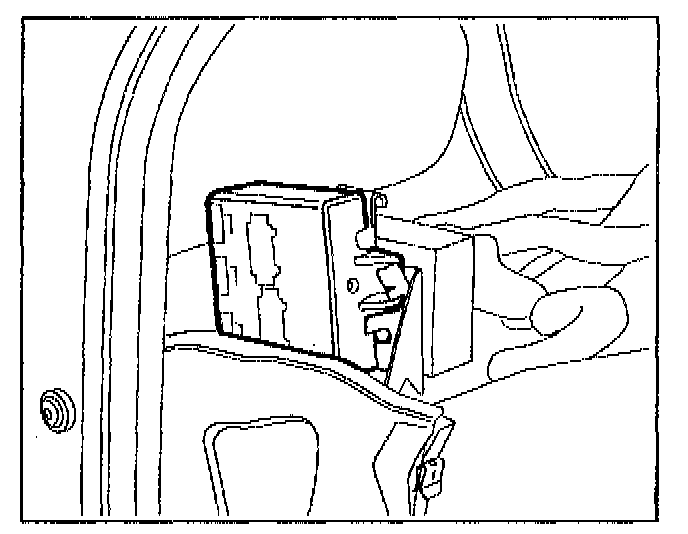

Operation CHARM
: Car repair manuals for everyone.
Home
>>
Volkswagen
>>
1997
>>
GTI (1H1) V6-2.8L (AAA)
>>
Repair and Diagnosis
>>
Accessories and Optional Equipment
>>
Relays and Modules - Accessories and Optional Equipment
>>
Alarm Module
>>
Locations
Alarm Module: Locations
J284 ALARM SYSTEM CONTROL MODULE

J284 Alarm system control module
^
behind instrument panel left-side
^
black housing